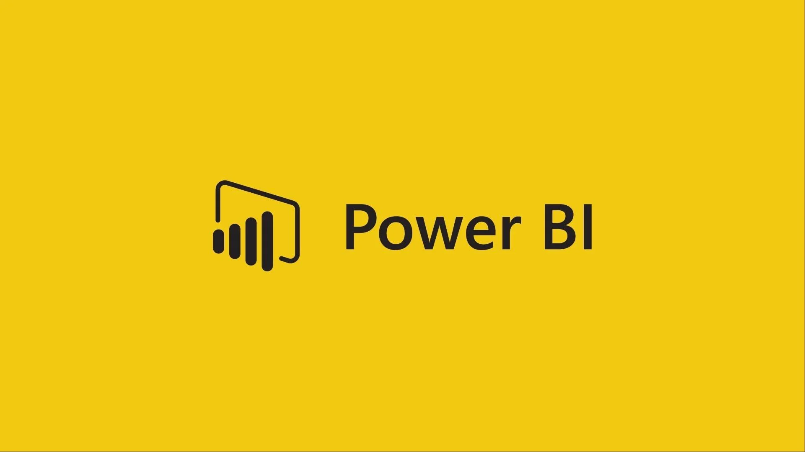
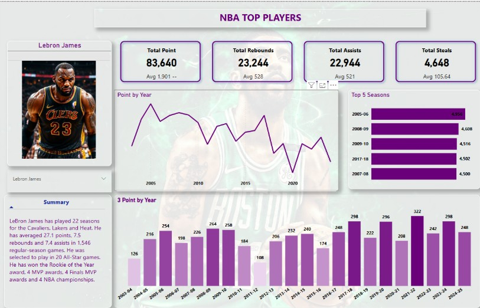

This repository contains a Power BI report (Movieslen.pbix) built on the popular MovieLens dataset. The project provides interactive visualizations and insights into movie ratings, user demographics, and genre trends.

click
A comprehensive, interactive data analytics dashboard built in Power BI, showcasing insights into Pixar movies' box office performance, critical reception, budget trends, and more.
This repository contains a Power BI dashboard that provides insights into pizza sales data, including top-selling pizzas, quantity sold by category and size,
transaction analysis over time, most-used ingredients, and more.
This repository contains a Power BI report (Financial sample.pbix) that provides comprehensive insights into financial data.
The interactive dashboard is designed to help stakeholders analyze key financial metrics, identify trends, and make data-driven decisions

This repository contains an NBA analysis dashboard built using Power BI. The interactive report (NBA.pbix) explores historical NBA data, including team performance, player statistics,
and game trends, providing deep insights for analysts, fans, and researchers.
This repository contains a dataset of health and safety incidents, including details such as the date, number of incidents, near misses, lost hours, injuries, vehicle incidents, site,
business unit, severity, and most frequent injury.
The primary goal of this project is to analyze and visualize health and safety data to identify trends, improve safety measures, and reduce incidents.
This Power BI dashboard visualizes child mortality trends from 2000 to 2022. It highlights the estimated share of newborns who die before reaching the age of five.
The dashboard provides insights into regional patterns, top-affected countries, and year-over-year changes in mortality rates.